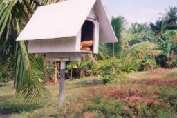
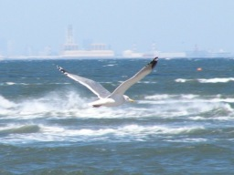
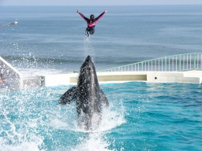

雄大な大自然から，庭先で見かけたシーンまで， 自然の見せるハッとする瞬間を捉えようとしたコーナーです 私の作品だけでなく， 素晴らしい作品をお送り下さる，Kamui氏の画像も， 氏の許可を頂いて掲載しております
庭先で，街角で.... 偶然見かけた四季折々の表情です。
Page : Top / Bottom

街角で偶然見かけた面白シーンです。 画像の構成も色とりどりで， おもちゃ箱をひっくり返したようなページを 目指しています (^^;。
放浪の写真家 Kamui氏が訪れた 異国の地の画像を中心とした 作品を掲載しています。 新たに西海岸で事業を展開されている Porco氏が加わりました。

飛行機，カモメ... 飛ぶものなら 何でもござれのページです。 大空をこよなく愛するKamui氏の作品と， 空も海も大好きな 私 Kotanの作品を掲載しています。

シーワールドを中心とした 動物たちとトレーナーのパフォーマンス， 活き活きとした動物たちの姿を集めてみました。
マルチアーティスト おみほさんの水墨画コーナーです。 水彩画も含まれていますが，基本は水墨です。 単色でここまで表現できることに驚きです。